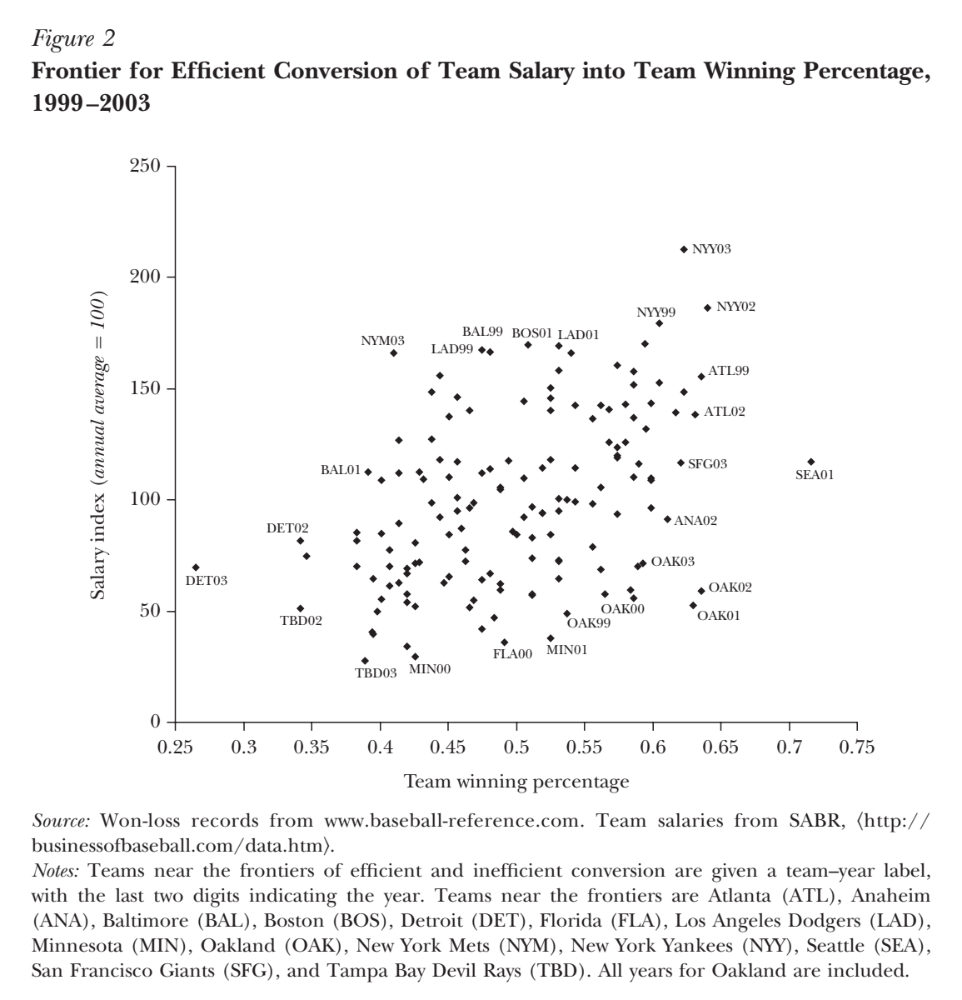
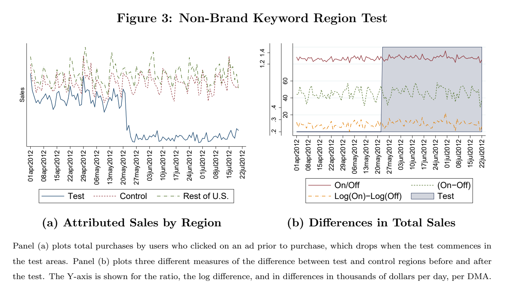
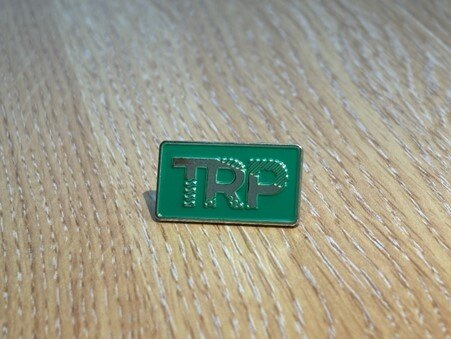

01
01Public health
John Snow
John Snow identified which water company supplied the households he investigated.
Read the caseSeminar cases
Use records of cholera deaths, batting statistics, sales after ad clicks, and theatre ticket purchases to make recommendations. Each case includes a video, the original data or figures, and a calculation.
Start with John Snow01Public health
John Snow identified which water company supplied the households he investigated.
Read the case
02Sports analytics
Oakland’s managers used batting records to find players they could afford to sign.
Read the case
03Marketing analytics
Researchers at eBay compared sales in markets where search ads ran with sales in markets where the ads stopped.
Read the case
04Performing arts marketing
Theatre staff used each customer’s ticket purchases to choose a membership offer.
Read the case